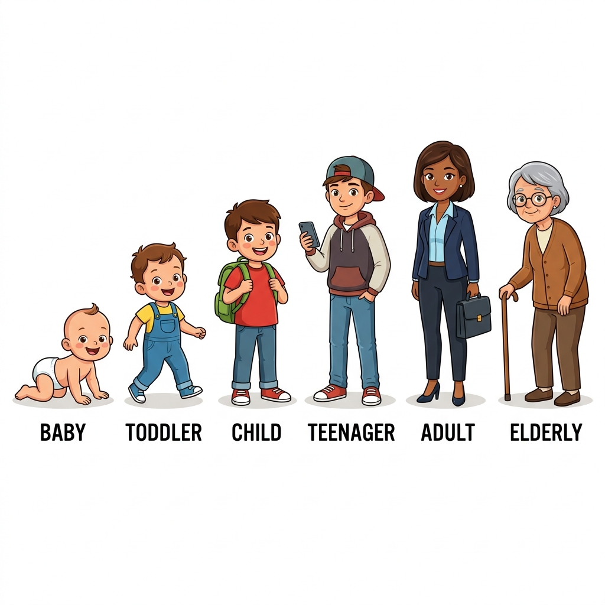
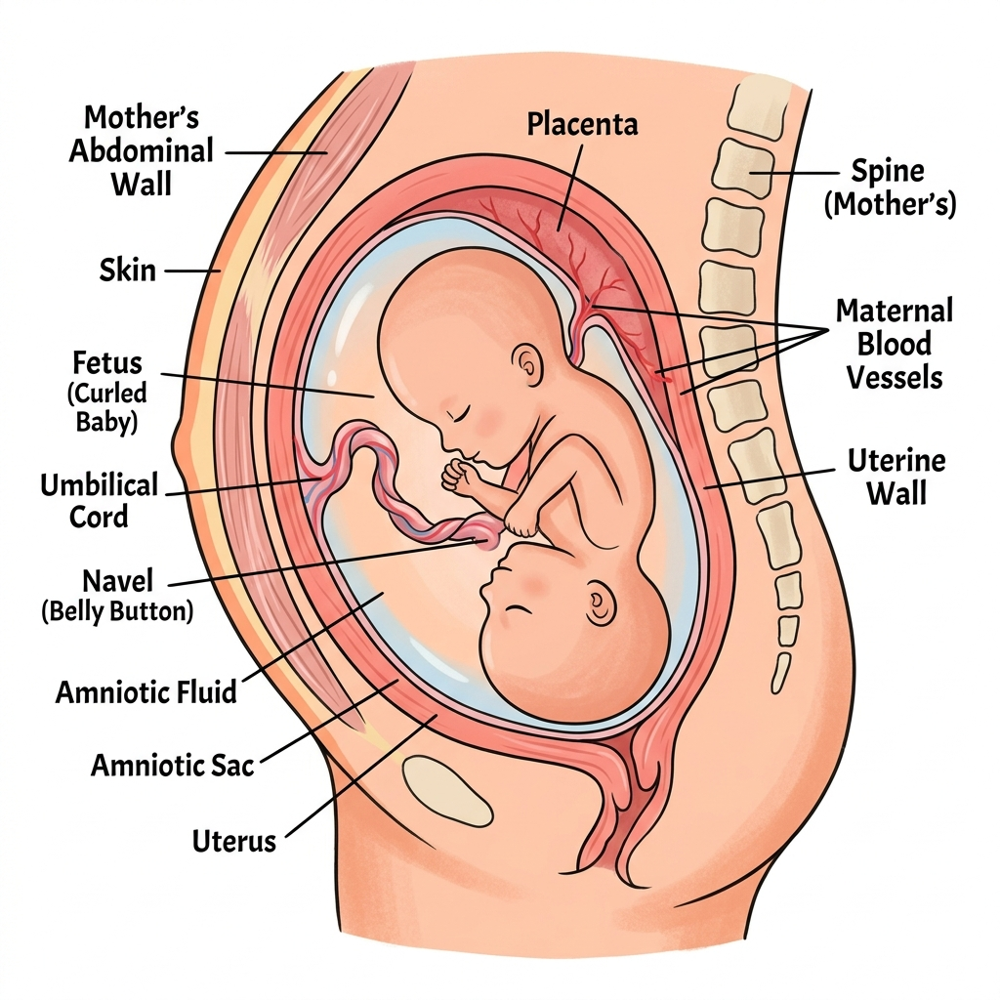
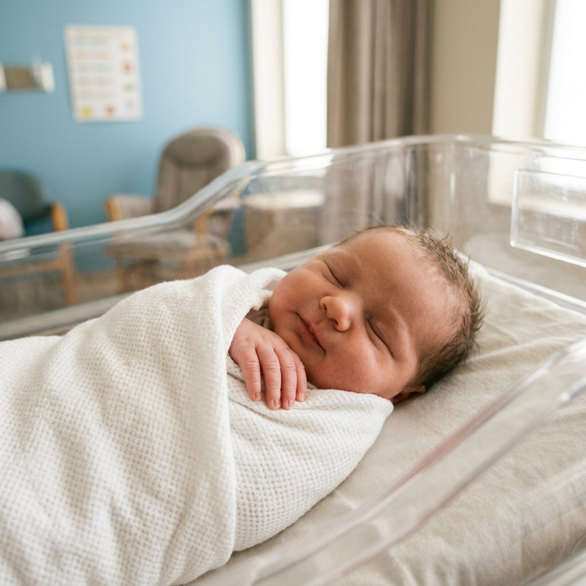
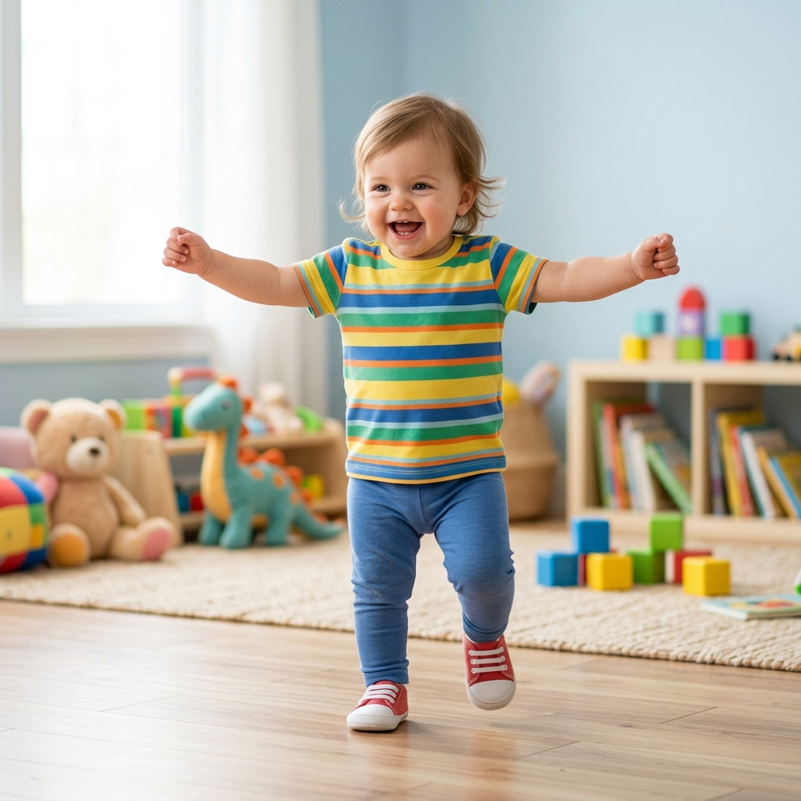
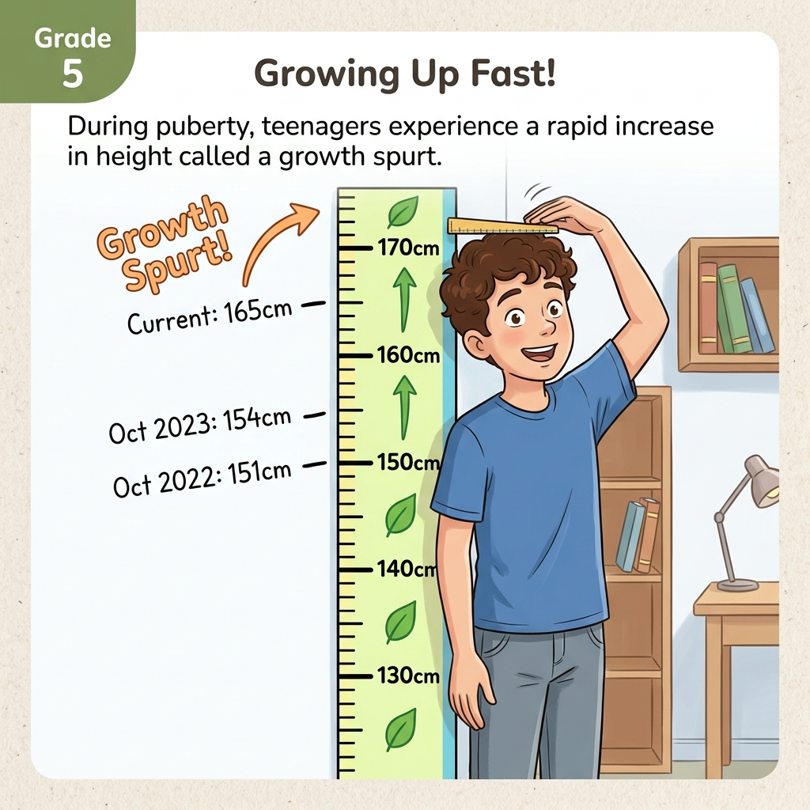
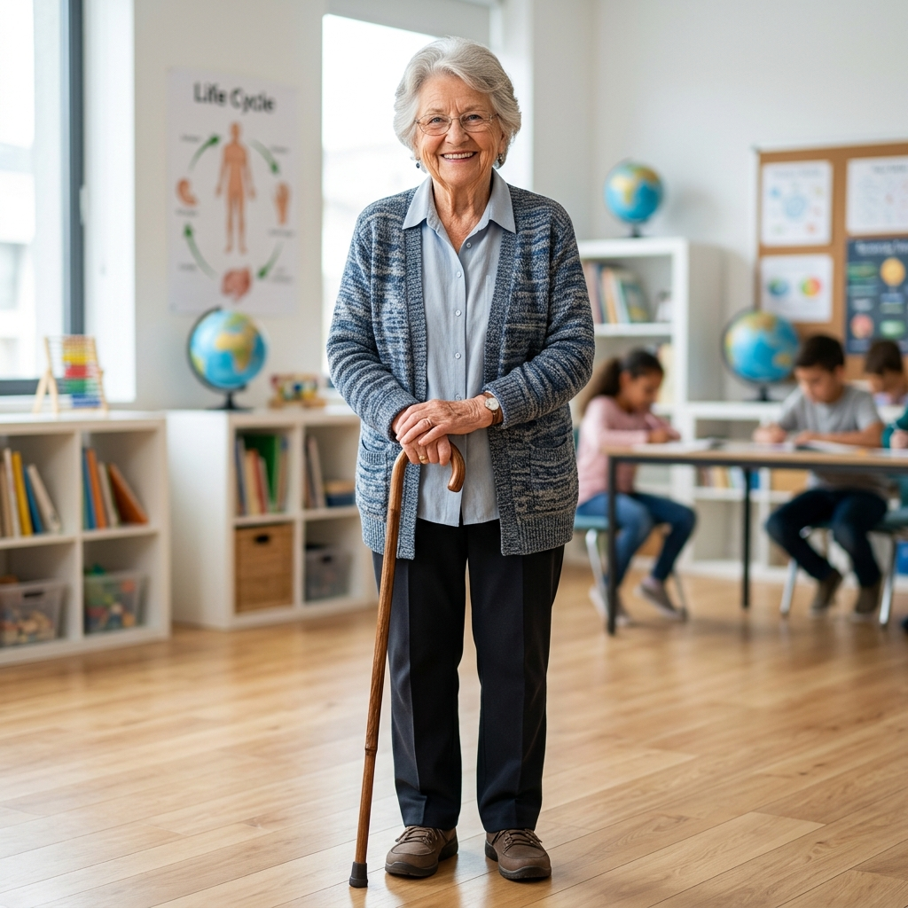
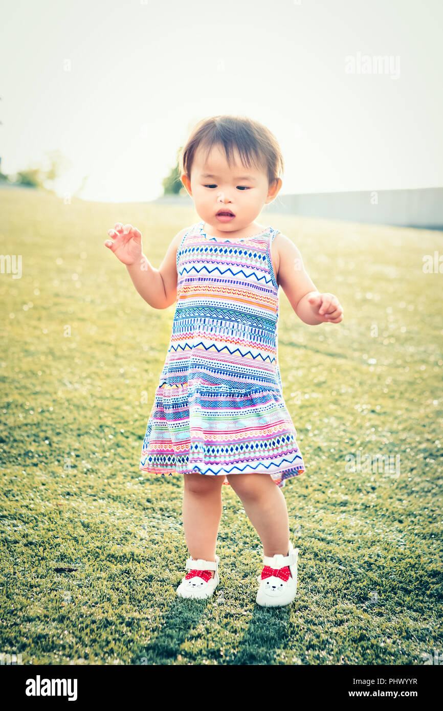
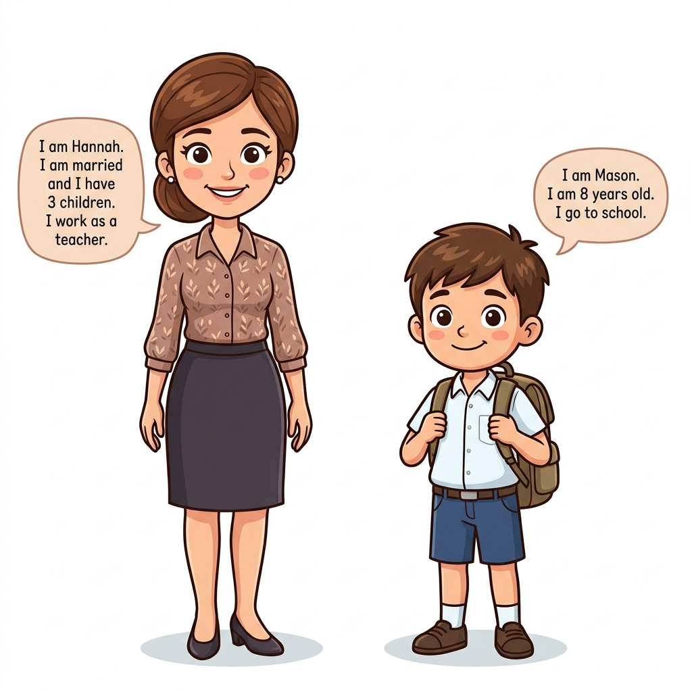
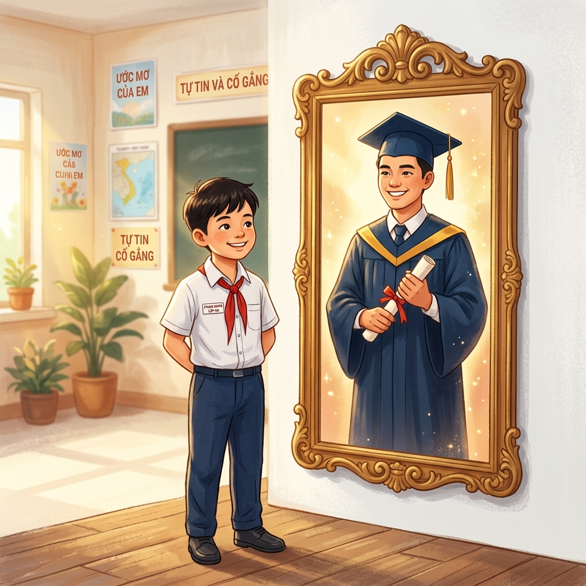

Class Starts In:
Human Growth
& Development
Lesson 19 · Grade 5 · Class 5H2 · Tuesday 7 April 2026
Teacher Victor · Room M210 · English Only Today! 🗣️
See · Think · Wonder Harvard Project Zero
Observe Closely
- 👁️ See: What visual changes do you notice?
- 🧠 Think: What is changing inside the brain?
- ❓ Wonder: What questions do you have?
Provoking Q:
If your body stops growing taller... do you stop developing?
Our Mission Today Bloom's Taxonomy
- Remember: Learn 9 life stage vocabulary words.
- Understand: Identify physical vs. mental changes.
- Apply: Classify people into stages from clues.
- Evaluate: Defend True/False with text evidence.
- Create: Predict how YOU will change in 10 years!
Concept Sort: Group the Pictures! Collaborative · 3 min
Group Activity
- Each group gets 6 picture cards .
- Sort them on a timeline from youngest → oldest.
- Add age ranges under each picture.
- Discuss: Which stage are YOU in?

Vocabulary (1/9) Word & Sentence

Foetus / Fetal
/ˈfiː.təs/ · /ˈfiː.təl/
Bào thai / Thuộc bào thai
📖 Definition: A foetus is a baby that is still growing inside its mother's body. It is not born yet.
📝 "A foetus grows for about nine months inside the mother's womb before it is born."
Vocabulary (2/9) Word & Sentence

Infancy
/ˈɪn.fən.si/
Giai đoạn sơ sinh (0–1 tuổi)
📖 Definition: Infancy is the first stage of life after a baby is born. It lasts from birth to about 1 year old. Babies cannot walk or talk yet.
📝 "During infancy, babies learn to crawl, sit up, and recognise their parents' faces."
Vocabulary (3/9) Word & Sentence

Toddler
/ˈtɒd.lər/
Trẻ con tập đi (1–3 tuổi)
📖 Definition: A toddler is a very young child, usually between 1 and 3 years old, who is just learning to walk and talk.
📝 "My little cousin is a toddler. She is 2 years old and she loves to run around the house!"
Vocabulary (4/9) Word & Sentence
Childhood
/ˈtʃaɪld.hʊd/
Thời thơ ấu (4–11 tuổi)
📖 Definition: Childhood is the time in your life when you are a child — from about 4 to 11 years old. You go to school, make friends, and learn many new things.
📝 "You are in your childhood right now! You go to school every day and learn science."
Vocabulary (5/9) Word & Sentence
Adolescence
/ˌæd.əˈles.əns/
Tuổi vị thành niên (12–19 tuổi)
📖 Definition: Adolescence is the stage between childhood and adulthood. Your body and mind change a lot. You become taller and start thinking differently.
📝 "During adolescence, young people grow taller quickly and start to look more like adults."
Vocabulary (6/9) Word & Sentence

Puberty
/ˈpjuː.bə.ti/
Tuổi dậy thì
📖 Definition: Puberty is a process that happens during adolescence. Your body changes from a child's body into an adult's body. You grow taller and your voice may change.
📝 "⚠️ Puberty is NOT a stage — it is a process that happens during adolescence."
Vocabulary (7/9) Word & Sentence
Teenager
/ˈtiːn.eɪ.dʒər/
Thanh thiếu niên (13–19 tuổi)
📖 Definition: A teenager is a young person who is between 13 and 19 years old. The name comes from the numbers that end in "-teen."
📝 "My older sister is a teenager. She is 16 years old and she goes to high school."
Vocabulary (8/9) Word & Sentence
Adulthood
/ˈæd.ʌlt.hʊd/
Tuổi trưởng thành (20–65 tuổi)
📖 Definition: Adulthood is the longest stage of life. Adults can work, drive, and take care of their families. Their bodies stop growing taller, but their brains keep learning.
📝 "Your parents and teachers are in adulthood. They have jobs and take care of you."
Vocabulary (9/9) Word & Sentence

Elderly
/ˈel.dər.li/
Người cao tuổi (> 65 tuổi)
📖 Definition: Elderly means very old. Elderly people are usually over 65 years old. They may have grey hair and wrinkles, but they are very wise!
📝 "My grandmother is elderly. She is 72 years old and she tells the best stories!"
Two Types of Changes UDL: Concept Mapping
Physical Changes
Changes to the body that you can see or measure.
✏️ Use GREEN highlighter in your book!
Mental Changes
Changes inside the brain — how you think, feel, and learn.
✏️ Use PURPLE highlighter in your book!
Thinking Question
"If a person's body stops growing taller, does that mean they have stopped developing? Why or why not?"
🎯 "How is a toddler different from an adolescent?"
Physical Examples
- Getting taller (height increases)
- Gaining weight and muscle mass
- Teeth growing and falling out
- Hair growing longer / changing
- Voice getting deeper (adolescence)
Mental Examples
- Learning to speak and read
- Understanding emotions
- Developing problem-solving skills
- Making decisions independently
- Building memory and focus
Hunt & Highlight: Early Years 📖 Pages 36-37
The fetal stage occurs within the mother's womb and is the first step in human growth and development. After spending around nine months in its mother's womb, a baby will be born.
At this stage, the infant is still very dependent on its mother, but it can now breathe independently, and cry when it feels hungry, cold, hot, or generally uncomfortable. An infant cannot speak.

The next stage of growth begins at the infant's first birthday, when it officially becomes a toddler. Throughout childhood, kids are constantly growing and learning new skills, such as walking, talking, and eating on their own.
✅ Mission: GREEN = physical · PURPLE = mental changes
Hunt & Highlight: Growing Up 📖 Page 37
At this stage, kids become teenagers. Puberty takes place at this point. During puberty, growth takes place at a rapid rate, and the body goes through significant external and internal changes.
This is the most independent stage. People usually begin to reproduce and have children.
Starting careers, university, first jobs. Peak physical fitness.
Established careers, raising families. Body begins slowing down.

Preparing for retirement. Wisdom and experience increase.

This stage lasts until death. The body continues to change: reduced mobility, weaker bones. But the brain continues to develop wisdom and understanding.
❓ Is puberty a stage or a process? ❓ Do elderly people stop developing?
Talk and Write About It 📖 Page 37
Q1: Look, Read & Write the Stage 📖 Page 38
1. They are between 10 and 17 years old.
Adolescent / Teenager
2. They go to school, and they have lots of energy.
Child
3. They are between one day old and two years old.
Baby / Infant
4. They go to work every day.
Adult
5. Which stage are you?
Child / Adolescent (you're 10!)
Q2: Match the Picture with the Stage 📖 Page 38 · DOK 1

✏️ Draw matching lines!
Click on picture → drag to word
Top-left (white shirt) → Child ✅
Top-right (suit+tie) → Adult ✅
Mid-left (bald+cane) → Elderly ✅
Mid-right (green onesie) → Baby ✅
Bot-left (green shirt) → Toddler ✅
Bot-right (pacifier) → Teenager ✅
Q3: Write the Correct Order (1→6) 📖 Page 39 · DOK 1
These pictures are SCRAMBLED! Write the correct number (1→6) under each:

The Sprint: Q4 & Q5 📖 Pages 38-39
🎵 Work quietly. Find all 10 words!
Q5: Circle 3 ways you will develop:
🤔 Think first: Which of these could happen to a 10-year-old in the next 10 years? Why?
I will get taller. Physical change — your bones grow!
I will get stronger. Physical — muscles develop.
My hair will turn gray. ❌ This happens to elderly, not adolescents!
I will become an adolescent. You'll be 20 = Adulthood!
I will become an infant. ❌ You can't go backwards in development!
Q6: Read and Match Sentences 📖 Page 39-40
💬 Guiding Q: What changes will happen to YOU in the next 10 years?
Q7: Reading in Science 📖 Page 40 · DOK 2
💭 Discuss: What do you think Hannah and Mason look like? What stage?
👥 Turn & Talk: Describe Hannah and Mason to your partner before I show you!
Hannah's stage? Adulthood (married + works + children)
Mason's stage? Childhood (8 years old + school)

📖 Reading Strategy: Close Reading Before You Read!
Science of Reading: 4 Steps
- 📖 FIRST READ: Read the whole passage once silently. Don't answer yet!
- 🔍 SECOND READ: Read again — this time underline key facts with your pencil.
- ❓ READ THE QUESTION: Read each T/F statement carefully. Circle "True" or "False."
- 📝 FIND PROOF: Go back to the text. Underline the exact sentence that proves your answer!
The Golden Rule
🚫 Do NOT guess!
Every answer MUST have proof from the text.
Sentence Frame:
"This is [TRUE/FALSE] because the text says '______'."
Claim & Defend: True or False? Evaluate Text Evidence
📖 HUMAN DEVELOPMENT (Page 40)
When human babies are born, they look a lot like their parents. They are also different from their parents. Babies are very small. They cannot feed themselves or walk like their parents can.
Each of us grows and changes throughout our lifetime. This process is called development. These changes include physical changes, which are the changes to our bodies. The way our brains work also changes. These are called mental changes.
The four main stages of human development are infancy, childhood, adolescence, and adulthood.
Mini-PBL: Future Me! CREATE

Project 10 Years Ahead!
You are ~10 (Childhood). In 10 years = 20 (Adulthood)!
- Write/Draw 2 Physical Changes
- Write/Draw 2 Mental Changes
Choose: ✍️ Write · 🎨 Draw · 🎤 Audio
Enrichment Homework
🏠 The Interview (Bloom's: EVALUATE)
- Ask an adult: "What was your biggest physical and mental change as a teenager?"
- Write 2 sentences comparing to what you learned.
- Evaluate: Same or different from textbook? Why?
🌟 Mission Accomplished! Closure
Great Work, 5H2!
🎯 EXIT TICKET
Name 1 physical + 1 mental change during adolescence.
🔄 REFLECTION
"I used to think..."
"Now I think..."
📝 HOMEWORK
The Interview + Page 37
🏆 NEXT CLASS
Vocabulary Spelling Bee!
🔑 Let's Revisit Our Wonders!
Can we answer the questions from the video?